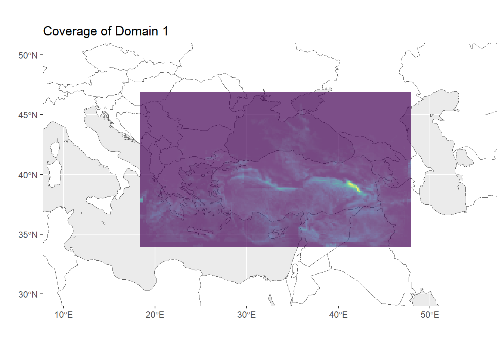
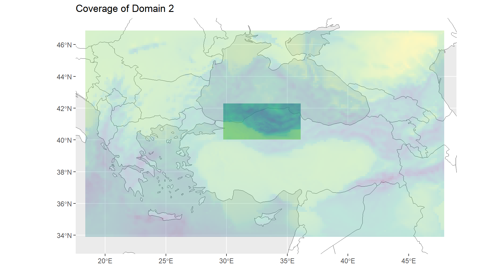
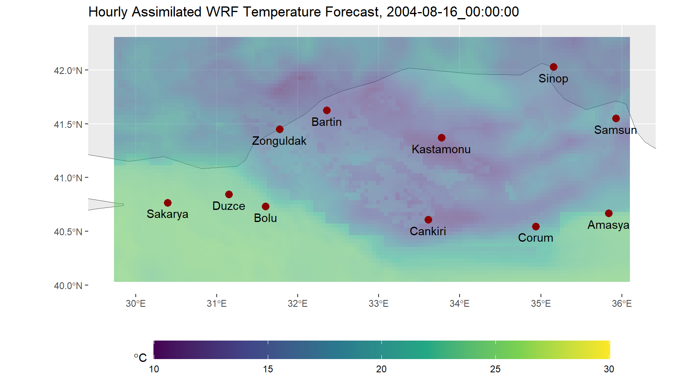
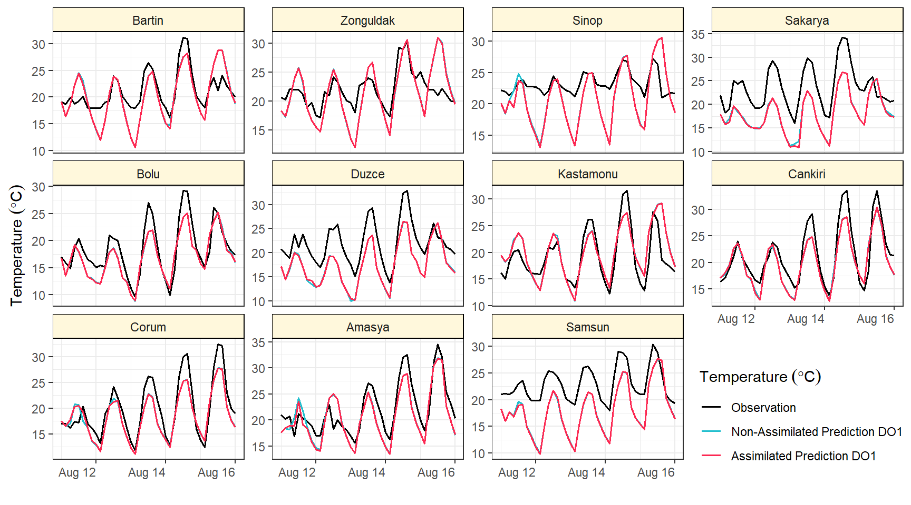
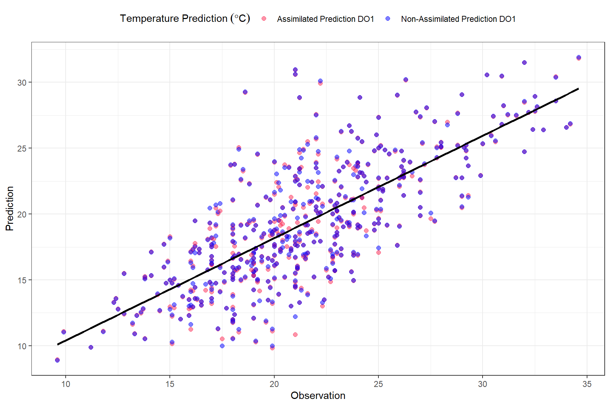

library(readxl)
library(tidyverse)
library(ggplot2)
library(raster)
library(rnaturalearth)
library(ncdf4)
library(R.utils)
library(sf)
library(gt)Evaluation of Assimilated and Non-Assimilated WRF Temperature Predictions for Northwestern Türkiye: A case study for the period between 11 and 16 August, 2004
Introduction
WRF Numerical Weather Prediction Model
Data Assimilation
Implementation in R
There are two files for two different domains as assimilated and non-assimilated predictions of WRF model. Thus, there are four netcdf files totally. We are going to define prediction variables, forecast period and coverage of domains for each file.
Uploading Necessary Packages
We will need several packages for some implementations in R, for instance; opening of the netcdf files of WRF data, handling of WRF outputs, visualization and etc.
Assimilated WRF Data
Firstly, we opened the assimilated WRF output for domain 1. You can see the content of WRF output below, the data cover time and coverage domain information with meteorological predictions such as potential temperature (T), temperature at 2 meter (T2), wind speed at ten meter (U10 & V10), precipitation (RAINC & RAINNC) and etc. We need to use name of the variables to extract specific data variables from the raw data.
fname <- paste0("D:/Kitaplar/METU-PHD/Thesis/IsmailHocandanAldim_Aksoy_27092023/",
"aswout/wrfout_d01_2004-08-11_00_00_00")
nc_data <- nc_open(fname)
{sink(paste0(fname,".txt"))
print(nc_data)
sink()}Temperature Prediction in WRF
In the WRF data, air temperature at 2 meter, the height of observation at gauges, is available. If 2 meter temperature is not available in netcdf file, the calculation of Air Temperature Prediction from WRF data is described at the given link based on WRF manual. In such a case, perturbation potential temperature, base pressure and perturbation pressure variables has to be extracted to get air temperature prediction.
float T2[west_east,south_north,Time]
FieldType: 104
MemoryOrder: XY
description: TEMP at 2 M
units: K
stagger:
coordinates: XLONG XLATSpatial Resolution (Domain 1)
Spatial resolution of domain 1 is 12 km as you can see below (DX: 12000, DY:12000).
78 global attributes:
TITLE: OUTPUT FROM WRF V3.1.1 MODEL
START_DATE: 2004-08-11_00:00:00
SIMULATION_START_DATE: 2004-08-11_00:00:00
WEST-EAST_GRID_DIMENSION: 192
SOUTH-NORTH_GRID_DIMENSION: 116
BOTTOM-TOP_GRID_DIMENSION: 28
DX: 12000
DY: 12000There are 41 time steps which means we can get predictions along the domain (191x115) for whole period. Additionally, the data includes information for 27 layers from bottom to top of the atmosphere.
long<- ncvar_get(nc_data, "XLONG")
lat<- ncvar_get(nc_data, "XLAT", verbose = F)
temp<- ncvar_get(nc_data, "T2")
dim(temp)[1] 191 115 41dim(ncvar_get(nc_data, "T"))[1] 191 115 27 41Forecast Period & Time Interval (Domain 1)
We can also obtained the forecast horizon by getting time steps from the data. After getting time steps, we see that forecast period is between 11 and 16 (00:00 UTC) August, 2004. In this case, the time interval for the forecast period up to +120 hours (or five days) is three hour.
t <- ncvar_get(nc_data, "Times"); t [1] "2004-08-11_00:00:00" "2004-08-11_03:00:00" "2004-08-11_06:00:00"
[4] "2004-08-11_09:00:00" "2004-08-11_12:00:00" "2004-08-11_15:00:00"
[7] "2004-08-11_18:00:00" "2004-08-11_21:00:00" "2004-08-12_00:00:00"
[10] "2004-08-12_03:00:00" "2004-08-12_06:00:00" "2004-08-12_09:00:00"
[13] "2004-08-12_12:00:00" "2004-08-12_15:00:00" "2004-08-12_18:00:00"
[16] "2004-08-12_21:00:00" "2004-08-13_00:00:00" "2004-08-13_03:00:00"
[19] "2004-08-13_06:00:00" "2004-08-13_09:00:00" "2004-08-13_12:00:00"
[22] "2004-08-13_15:00:00" "2004-08-13_18:00:00" "2004-08-13_21:00:00"
[25] "2004-08-14_00:00:00" "2004-08-14_03:00:00" "2004-08-14_06:00:00"
[28] "2004-08-14_09:00:00" "2004-08-14_12:00:00" "2004-08-14_15:00:00"
[31] "2004-08-14_18:00:00" "2004-08-14_21:00:00" "2004-08-15_00:00:00"
[34] "2004-08-15_03:00:00" "2004-08-15_06:00:00" "2004-08-15_09:00:00"
[37] "2004-08-15_12:00:00" "2004-08-15_15:00:00" "2004-08-15_18:00:00"
[40] "2004-08-15_21:00:00" "2004-08-16_00:00:00"ymd_hms(t[41]) - ymd_hms(t[1])Time difference of 5 daysStudy Area (Domain 1)
Figure 1 below shows the coverage of domain 1 where covers Türkiye and its surrounding.
raster_temp<- list()
for (i in 1:dim(temp)[3]) {
raster_temp[[i]] <- raster(t(temp[, , i] - 273.15),
xmn=min(long), xmx=max(long),
ymn=min(lat), ymx=max(lat),
crs=CRS("+proj=longlat +ellps=WGS84 +datum=WGS84 +no_defs+ towgs84=0,0,0"))
}
temp_df <-as.data.frame(raster_temp[[length(t)]], xy = TRUE)
world <- rnaturalearth::ne_countries(scale='medium',returnclass = 'sf')
ggplot(data = world) + geom_sf(fill = "white") +
coord_sf(crs = st_crs(4326), xlim = c(10, 55), ylim = c(30,50)) +
geom_raster(data = temp_df, aes(x = x, y = y, fill = layer), alpha=0.7) +
scale_fill_viridis_c() + labs(x="",y="", fill= expression(degree*C)) +
ggtitle("Coverage of Domain 1") + theme(legend.key.height = unit(1, "cm"))
Temperature Prediction (Domain 2)
There are 121 time steps for second domain since we can inference by dimension of T2 data.
fname2 <- paste0("D:/Kitaplar/METU-PHD/Thesis/IsmailHocandanAldim_Aksoy_27092023/",
"aswout/wrfout_d02_2004-08-11_00_00_00")
nc_data2 <- nc_open(fname2)
{sink(paste0(fname2,".txt"))
print(nc_data2)
sink()}
long_2<- ncvar_get(nc_data2, "XLONG")
lat_2<- ncvar_get(nc_data2, "XLAT", verbose = F)
temp_2<- ncvar_get(nc_data2, "T2")
dim(temp_2)[1] 132 63 121Spatial Resolution (Domain 2)
Spatial resolution of domain 2 is 4 km which is a finer resolution than previous one (DX: 4000, DY: 4000).
78 global attributes:
TITLE: OUTPUT FROM WRF V3.1.1 MODEL
START_DATE: 2004-08-11_00:00:00
SIMULATION_START_DATE: 2004-08-11_00:00:00
WEST-EAST_GRID_DIMENSION: 133
SOUTH-NORTH_GRID_DIMENSION: 64
BOTTOM-TOP_GRID_DIMENSION: 28
DX: 4000
DY: 4000Forecast Period & Time Interval (Domain 2)
Forecast period for domain 2 is same with previous one. However, the time interval is one hour and it has a finer temporal resolution.
t2 <- ncvar_get(nc_data2, "Times"); t2 [1] "2004-08-11_00:00:00" "2004-08-11_01:00:00" "2004-08-11_02:00:00"
[4] "2004-08-11_03:00:00" "2004-08-11_04:00:00" "2004-08-11_05:00:00"
[7] "2004-08-11_06:00:00" "2004-08-11_07:00:00" "2004-08-11_08:00:00"
[10] "2004-08-11_09:00:00" "2004-08-11_10:00:00" "2004-08-11_11:00:00"
[13] "2004-08-11_12:00:00" "2004-08-11_13:00:00" "2004-08-11_14:00:00"
[16] "2004-08-11_15:00:00" "2004-08-11_16:00:00" "2004-08-11_17:00:00"
[19] "2004-08-11_18:00:00" "2004-08-11_19:00:00" "2004-08-11_20:00:00"
[22] "2004-08-11_21:00:00" "2004-08-11_22:00:00" "2004-08-11_23:00:00"
[25] "2004-08-12_00:00:00" "2004-08-12_01:00:00" "2004-08-12_02:00:00"
[28] "2004-08-12_03:00:00" "2004-08-12_04:00:00" "2004-08-12_05:00:00"
[31] "2004-08-12_06:00:00" "2004-08-12_07:00:00" "2004-08-12_08:00:00"
[34] "2004-08-12_09:00:00" "2004-08-12_10:00:00" "2004-08-12_11:00:00"
[37] "2004-08-12_12:00:00" "2004-08-12_13:00:00" "2004-08-12_14:00:00"
[40] "2004-08-12_15:00:00" "2004-08-12_16:00:00" "2004-08-12_17:00:00"
[43] "2004-08-12_18:00:00" "2004-08-12_19:00:00" "2004-08-12_20:00:00"
[46] "2004-08-12_21:00:00" "2004-08-12_22:00:00" "2004-08-12_23:00:00"
[49] "2004-08-13_00:00:00" "2004-08-13_01:00:00" "2004-08-13_02:00:00"
[52] "2004-08-13_03:00:00" "2004-08-13_04:00:00" "2004-08-13_05:00:00"
[55] "2004-08-13_06:00:00" "2004-08-13_07:00:00" "2004-08-13_08:00:00"
[58] "2004-08-13_09:00:00" "2004-08-13_10:00:00" "2004-08-13_11:00:00"
[61] "2004-08-13_12:00:00" "2004-08-13_13:00:00" "2004-08-13_14:00:00"
[64] "2004-08-13_15:00:00" "2004-08-13_16:00:00" "2004-08-13_17:00:00"
[67] "2004-08-13_18:00:00" "2004-08-13_19:00:00" "2004-08-13_20:00:00"
[70] "2004-08-13_21:00:00" "2004-08-13_22:00:00" "2004-08-13_23:00:00"
[73] "2004-08-14_00:00:00" "2004-08-14_01:00:00" "2004-08-14_02:00:00"
[76] "2004-08-14_03:00:00" "2004-08-14_04:00:00" "2004-08-14_05:00:00"
[79] "2004-08-14_06:00:00" "2004-08-14_07:00:00" "2004-08-14_08:00:00"
[82] "2004-08-14_09:00:00" "2004-08-14_10:00:00" "2004-08-14_11:00:00"
[85] "2004-08-14_12:00:00" "2004-08-14_13:00:00" "2004-08-14_14:00:00"
[88] "2004-08-14_15:00:00" "2004-08-14_16:00:00" "2004-08-14_17:00:00"
[91] "2004-08-14_18:00:00" "2004-08-14_19:00:00" "2004-08-14_20:00:00"
[94] "2004-08-14_21:00:00" "2004-08-14_22:00:00" "2004-08-14_23:00:00"
[97] "2004-08-15_00:00:00" "2004-08-15_01:00:00" "2004-08-15_02:00:00"
[100] "2004-08-15_03:00:00" "2004-08-15_04:00:00" "2004-08-15_05:00:00"
[103] "2004-08-15_06:00:00" "2004-08-15_07:00:00" "2004-08-15_08:00:00"
[106] "2004-08-15_09:00:00" "2004-08-15_10:00:00" "2004-08-15_11:00:00"
[109] "2004-08-15_12:00:00" "2004-08-15_13:00:00" "2004-08-15_14:00:00"
[112] "2004-08-15_15:00:00" "2004-08-15_16:00:00" "2004-08-15_17:00:00"
[115] "2004-08-15_18:00:00" "2004-08-15_19:00:00" "2004-08-15_20:00:00"
[118] "2004-08-15_21:00:00" "2004-08-15_22:00:00" "2004-08-15_23:00:00"
[121] "2004-08-16_00:00:00"ymd_hms(t2[121]) - ymd_hms(t2[1])Time difference of 5 daysStudy Area (Domain 2)
Figure 2 below shows the comparison of two domains and coverage of domain 2 where covers some part of northwest of Türkiye.
raster_temp_2<- list()
for (i in 1:dim(temp_2)[3]) {
raster_temp_2[[i]] <- raster(t(temp_2[, , i] - 273.15),
xmn=min(long_2), xmx=max(long_2),
ymn=min(lat_2), ymx=max(lat_2),
crs=CRS("+proj=longlat +ellps=WGS84 +datum=WGS84 +no_defs+ towgs84=0,0,0"))
}
temp_df_2 <-as.data.frame(raster_temp_2[[length(t2)]], xy = TRUE)
world <- rnaturalearth::ne_countries(scale='medium',returnclass = 'sf')
ggplot(data = world) + geom_sf(fill = "white") +
coord_sf(crs = st_crs(4326), xlim = c(19, 47.5), ylim = c(33.5,47)) +
geom_raster(data = temp_df,
aes(x = x, y = y, fill = layer), alpha=0.4, show.legend = FALSE) +
geom_raster(data = temp_df_2,
aes(x = x, y = y, fill = layer), alpha=0.7, show.legend = FALSE) +
scale_fill_viridis_c() + labs(x="",y="") +
ggtitle("Coverage of Domain 2") 
Identification of Meteorological Stations
Domain 2 covers several provinces which are located northwest of Türkiye. Thus, we need to determine meteorological stations for comparing observation versus assimilated and non-assimilated WRF predictions. Only one station was selected for each province to evaluate the performance of both assimilated and non-assimilated WRF predictions. Table 1 shows the main gauges across the domain 2.
df_gauges <- read.delim("D:/Kitaplar/METU-PHD/COURSES/3-TERM/STAT570/STAT_570_FINAL_PROJECT_MAKSOY-SAKIL/gauges.txt", sep="|")
df_gauges<- df_gauges[,-c(3,4)]
colnames(df_gauges)<- c("Station","Province","Latitude","Longitude","Altitude") ;
df_gauges$Province <- tolower(df_gauges$Province) |> str_to_title()
df_gauges<- df_gauges |> arrange(Station)
df_gauges |> gt()| Station | Province | Latitude | Longitude | Altitude |
|---|---|---|---|---|
| 17020 | Bartin | 41.62480 | 32.35690 | 33 |
| 17022 | Zonguldak | 41.44924 | 31.77792 | 135 |
| 17026 | Sinop | 42.02990 | 35.15450 | 32 |
| 17069 | Sakarya | 40.76760 | 30.39340 | 30 |
| 17070 | Bolu | 40.73290 | 31.60220 | 743 |
| 17072 | Duzce | 40.84370 | 31.14880 | 146 |
| 17074 | Kastamonu | 41.37100 | 33.77560 | 800 |
| 17080 | Cankiri | 40.60820 | 33.61020 | 755 |
| 17084 | Corum | 40.54610 | 34.93620 | 776 |
| 17085 | Amasya | 40.66680 | 35.83530 | 409 |
| 17622 | Samsun | 41.55150 | 35.92470 | 103 |
Figure 3 is shown for distribution of meteorological stations across the study area.
extents<- extent(raster_temp_2[[length(t2)]])
ggplot(data = world) + geom_sf(fill = "white") +
coord_sf(crs = st_crs(4326), xlim = c(extents[1], extents[2]),
ylim = c(extents[3],extents[4])) +
geom_raster(data = temp_df_2,
aes(x = x, y = y, fill = layer), alpha=0.6, show.legend = FALSE) +
scale_fill_viridis_c() + labs(x="",y="") +
geom_point(data = df_gauges, aes(x=Longitude, y=Latitude),
size=3, colour="darkred") +
geom_text(data = df_gauges, mapping = aes(x=Longitude, y=Latitude, label=Province), nudge_y = -0.1) +
ggtitle( paste("Hourly Assimilated WRF Temperature Forecast,", t2[121]) )
Get Temperature Observations
temp_obs<- read_excel("D:/Kitaplar/METU-PHD/COURSES/3-TERM/STAT570/STAT_570_FINAL_PROJECT_MAKSOY-SAKIL/df_2023122096C0-Saatlik_Sicaklik.xlsx")
head(temp_obs)# A tibble: 6 x 7
Istasyon_No Istasyon_Adi YIL AY GUN SAAT SICAKLIK
<dbl> <chr> <dbl> <dbl> <dbl> <dbl> <dbl>
1 17020 BARTIN 2004 8 10 0 18.7
2 17020 BARTIN 2004 8 10 1 18.3
3 17020 BARTIN 2004 8 10 2 18
4 17020 BARTIN 2004 8 10 3 17.1
5 17020 BARTIN 2004 8 10 4 17.6
6 17020 BARTIN 2004 8 10 5 18.3temp_obs<-
temp_obs |>
mutate(date= as.Date(with(temp_obs, paste(YIL, AY, GUN,sep="-")), "%Y-%m-%d")) |>
mutate(dates= ymd_hms(paste(date, paste(SAAT, 0, 0, sep = ":")), tz="UTC")) |>
dplyr::select(Istasyon_No, dates, SICAKLIK)
nrow(temp_obs)[1] 1848temp_obs<-
temp_obs |>
group_by(Istasyon_No) |>
tidyr::complete( dates = seq(ymd_hm("2004-08-10 00:00"), ymd_hm("2004-08-16 23:00"), by = "1 hours"))
nrow(temp_obs)[1] 1848colnames(temp_obs)<- c("Station","dates","observation")
head(temp_obs)# A tibble: 6 x 3
# Groups: Station [1]
Station dates observation
<dbl> <dttm> <dbl>
1 17020 2004-08-10 00:00:00 18.7
2 17020 2004-08-10 01:00:00 18.3
3 17020 2004-08-10 02:00:00 18
4 17020 2004-08-10 03:00:00 17.1
5 17020 2004-08-10 04:00:00 17.6
6 17020 2004-08-10 05:00:00 18.3Extraction of Temperature Predictions from WRF
centroids <- df_gauges[,c(1,3,4)]
coordinates(centroids)= ~ Longitude + Latitude
# domain1
raster_temp_stack<- stack(raster_temp)
raster_temp_value<- raster::extract(raster_temp_stack, centroids)
rt_cpv <- cbind(centroids,raster_temp_value)
rt_cpv_df<- data.frame(rt_cpv)
rt_cpv_df<- rt_cpv_df[,-ncol(rt_cpv_df)]
rt_cpv_df<-
rt_cpv_df |>
dplyr::select(Station, Longitude, Latitude, everything() )
colnames(rt_cpv_df) <- append(colnames(rt_cpv_df[1:3]),as.character(t))
head(rt_cpv_df)[,1:5] Station Longitude Latitude 2004-08-11_00:00:00 2004-08-11_03:00:00
1 17020 32.35690 41.62480 19.14172 16.38781
2 17022 31.77792 41.44924 18.32778 17.36398
3 17026 35.15450 42.02990 20.14706 18.49960
4 17069 30.39340 40.76760 17.88046 15.75091
5 17070 31.60220 40.73290 16.78866 13.52252
6 17072 31.14880 40.84370 17.22476 14.45699# domain2
raster_temp_stack_2<- stack(raster_temp_2)
raster_temp_value_2<- raster::extract(raster_temp_stack_2, centroids)
rt_cpv_2 <- cbind(centroids,raster_temp_value_2)
rt_cpv_df_2<- data.frame(rt_cpv_2)
rt_cpv_df_2<- rt_cpv_df_2[,-ncol(rt_cpv_df_2)]
rt_cpv_df_2<-
rt_cpv_df_2 |>
dplyr::select(Station, Longitude, Latitude, everything() )
colnames(rt_cpv_df_2)<- append(colnames(rt_cpv_df_2[1:3]),as.character(t2))
head(rt_cpv_df_2)[,1:5] Station Longitude Latitude 2004-08-11_00:00:00 2004-08-11_01:00:00
1 17020 32.35690 41.62480 16.26486 12.88519
2 17022 31.77792 41.44924 16.93813 14.32098
3 17026 35.15450 42.02990 17.94399 18.06762
4 17069 30.39340 40.76760 20.76284 23.30419
5 17070 31.60220 40.73290 20.05142 22.39242
6 17072 31.14880 40.84370 20.31973 22.24160Operations on Non-Assimilated WRF
We need to apply similar procedures on non-assimilated WRF predictions for extraction as shown above.
#domain1
fname_nas <- paste0("D:/Kitaplar/METU-PHD/Thesis/IsmailHocandanAldim_Aksoy_27092023/",
"wout/wrfout_d01_2004-08-11_00_00_00")
nc_data_nas <- nc_open(fname_nas)
{sink(paste0(fname_nas,".txt"))
print(nc_data_nas)
sink()}
long_nas<- ncvar_get(nc_data_nas, "XLONG")
lat_nas<- ncvar_get(nc_data_nas, "XLAT", verbose = F)
temp_nas<- ncvar_get(nc_data_nas, "T2")
t_nas <- ncvar_get(nc_data_nas, "Times")
raster_temp_nas<- list()
for (i in 1:dim(temp_nas)[3]) {
raster_temp_nas[[i]] <- raster(t(temp_nas[, , i] - 273.15),
xmn=min(long_nas), xmx=max(long_nas),
ymn=min(lat_nas), ymx=max(lat_nas),
crs=CRS("+proj=longlat +ellps=WGS84 +datum=WGS84 +no_defs+ towgs84=0,0,0"))
}
#domain2
fname2_nas <- paste0("D:/Kitaplar/METU-PHD/Thesis/IsmailHocandanAldim_Aksoy_27092023/",
"wout/wrfout_d02_2004-08-11_00_00_00")
nc_data2_nas <- nc_open(fname2_nas)
{sink(paste0(fname2_nas,".txt"))
print(nc_data2_nas)
sink()}
long_2_nas<- ncvar_get(nc_data2_nas, "XLONG")
lat_2_nas<- ncvar_get(nc_data2_nas, "XLAT", verbose = F)
temp_2_nas<- ncvar_get(nc_data2_nas, "T2")
t2_nas <- ncvar_get(nc_data2_nas, "Times")
raster_temp_2_nas<- list()
for (i in 1:dim(temp_2_nas)[3]) {
raster_temp_2_nas[[i]] <- raster(t(temp_2_nas[, , i] - 273.15),
xmn=min(long_2_nas), xmx=max(long_2_nas),
ymn=min(lat_2_nas), ymx=max(lat_2_nas),
crs=CRS("+proj=longlat +ellps=WGS84 +datum=WGS84 +no_defs+ towgs84=0,0,0"))
}
# domain1
raster_temp_stack_nas<- stack(raster_temp_nas)
raster_temp_value_nas<- raster::extract(raster_temp_stack_nas, centroids)
rt_cpv_nas <- cbind(centroids,raster_temp_value_nas)
rt_cpv_df_nas<- data.frame(rt_cpv_nas)
rt_cpv_df_nas<- rt_cpv_df_nas[,-ncol(rt_cpv_df_nas)]
rt_cpv_df_nas<-
rt_cpv_df_nas |>
dplyr::select(Station, Longitude, Latitude, everything() )
colnames(rt_cpv_df_nas) <- append(colnames(rt_cpv_df_nas[1:3]),as.character(t_nas))
# domain2
raster_temp_stack_2_nas<- stack(raster_temp_2_nas)
raster_temp_value_2_nas<- raster::extract(raster_temp_stack_2_nas, centroids)
rt_cpv_2_nas <- cbind(centroids,raster_temp_value_2_nas)
rt_cpv_df_2_nas<- data.frame(rt_cpv_2_nas)
rt_cpv_df_2_nas<- rt_cpv_df_2_nas[,-ncol(rt_cpv_df_2_nas)]
rt_cpv_df_2_nas<-
rt_cpv_df_2_nas |>
dplyr::select(Station, Longitude, Latitude, everything() )
colnames(rt_cpv_df_2_nas)<- append(colnames(rt_cpv_df_2_nas[1:3]),as.character(t2_nas))
head(rt_cpv_df_2_nas)[,1:5] Station Longitude Latitude 2004-08-11_00:00:00 2004-08-11_01:00:00
1 17020 32.35690 41.62480 16.26486 12.82797
2 17022 31.77792 41.44924 16.93813 14.35607
3 17026 35.15450 42.02990 17.94399 17.90621
4 17069 30.39340 40.76760 20.76284 23.27804
5 17070 31.60220 40.73290 20.05142 22.38864
6 17072 31.14880 40.84370 20.31973 22.20229Derivation & Manipulation in Data Frames
# domain1 assimilated prediction: rt_cpv_df
# domain2 assimilated prediction: rt_cpv_df_2
# domain1 non_assimilated prediction: rt_cpv_df_nas
# domain2 non_assimilated prediction: rt_cpv_df_2_nas
# observations: temp_obs
data_list<- list(rt_cpv_df, rt_cpv_df_2, rt_cpv_df_nas, rt_cpv_df_2_nas)
new_df_list<- list()
variable<- c("predict_do1", "predict_do2","predict_do1_nas","predict_do2_nas")
for(i in 1:length(variable)){
new_df_list[[i]] <-
data_list[[i]] |>
distinct(Station, .keep_all = TRUE) |>
pivot_longer(
cols = starts_with("2004"),
names_to = "dates",
values_to = variable[i],
values_drop_na = TRUE
) |>
dplyr:: select(Station, dates, variable[i])
new_df_list[[i]]$dates<- str_replace(new_df_list[[i]]$dates, "_"," ")
new_df_list[[i]]$dates<- as.POSIXct(new_df_list[[i]]$dates)
}
temp_obs_d01<- temp_obs |>
mutate(dates = dates - 3*60*60 )
temp_obs_d02<- temp_obs
temp_obs_d02$dates<- temp_obs_d02$dates - 60*60
# domain1: new_df_list[[1]]; new_df_list[[3]]
# domain2: new_df_list[[2]]; head(new_df_list[[4]])
for(i in 1:length(variable)){
ifelse(i %% 2 == 0,
new_df_list[[i]] <-
new_df_list[[i]] |>
merge(temp_obs_d02, by = c("Station","dates")),
new_df_list[[i]] <-
new_df_list[[i]] |>
merge(temp_obs_d01, by = c("Station","dates"))
)
}
head(new_df_list[[1]]); head(new_df_list[[3]]) Station dates predict_do1 observation
1 17020 2004-08-11 00:00:00 19.14172 19.1
2 17020 2004-08-11 03:00:00 16.38781 18.7
3 17020 2004-08-11 06:00:00 18.63476 19.9
4 17020 2004-08-11 09:00:00 22.33074 18.8
5 17020 2004-08-11 12:00:00 24.51916 19.2
6 17020 2004-08-11 15:00:00 22.40240 20.1 Station dates predict_do1_nas observation
1 17020 2004-08-11 00:00:00 19.14172 19.1
2 17020 2004-08-11 03:00:00 16.34579 18.7
3 17020 2004-08-11 06:00:00 18.62121 19.9
4 17020 2004-08-11 09:00:00 22.27563 18.8
5 17020 2004-08-11 12:00:00 24.56793 19.2
6 17020 2004-08-11 15:00:00 23.05441 20.1head(new_df_list[[2]]); head(new_df_list[[4]]) Station dates predict_do2 observation
1 17020 2004-08-11 00:00:00 16.26486 20.0
2 17020 2004-08-11 01:00:00 12.88519 20.0
3 17020 2004-08-11 02:00:00 12.50424 19.1
4 17020 2004-08-11 03:00:00 12.47100 18.8
5 17020 2004-08-11 04:00:00 12.16769 18.8
6 17020 2004-08-11 05:00:00 12.09380 18.7 Station dates predict_do2_nas observation
1 17020 2004-08-11 00:00:00 16.26486 20.0
2 17020 2004-08-11 01:00:00 12.82797 20.0
3 17020 2004-08-11 02:00:00 12.93353 19.1
4 17020 2004-08-11 03:00:00 12.41866 18.8
5 17020 2004-08-11 04:00:00 12.43447 18.8
6 17020 2004-08-11 05:00:00 12.13333 18.7Visualization
head(
new_df_list[[1]] |>
inner_join(new_df_list[[3]], by = c("Station","dates","observation")) ) Station dates predict_do1 observation predict_do1_nas
1 17020 2004-08-11 00:00:00 19.14172 19.1 19.14172
2 17020 2004-08-11 03:00:00 16.38781 18.7 16.34579
3 17020 2004-08-11 06:00:00 18.63476 19.9 18.62121
4 17020 2004-08-11 09:00:00 22.33074 18.8 22.27563
5 17020 2004-08-11 12:00:00 24.51916 19.2 24.56793
6 17020 2004-08-11 15:00:00 22.40240 20.1 23.05441head(
new_df_list[[1]] |>
inner_join(new_df_list[[3]], by = c("Station","dates","observation")) |>
pivot_longer(
cols = -c(1:2),
names_to = "Temperature",
values_to = "value",
values_drop_na = TRUE) ) # A tibble: 6 x 4
Station dates Temperature value
<int> <dttm> <chr> <dbl>
1 17020 2004-08-11 00:00:00 predict_do1 19.1
2 17020 2004-08-11 00:00:00 observation 19.1
3 17020 2004-08-11 00:00:00 predict_do1_nas 19.1
4 17020 2004-08-11 03:00:00 predict_do1 16.4
5 17020 2004-08-11 03:00:00 observation 18.7
6 17020 2004-08-11 03:00:00 predict_do1_nas 16.3new_df_list[[1]] |>
inner_join(new_df_list[[3]], by = c("Station","dates","observation")) |>
pivot_longer(
cols = -c(1:2),
names_to = "Temperature",
values_to = "value",
values_drop_na = TRUE) |>
mutate(Station = factor(Station,
labels = df_gauges$Province )) |>
mutate(Temperature = factor(Temperature,
levels= c("observation", "predict_do1_nas", "predict_do1")) ) |>
ggplot(aes(x= dates, y=value)) +
geom_line(aes(colour = Temperature), size=0.7) +
scale_colour_manual(name= expression("Temperature"~(degree*C)),
values = c('observation' = "black",
'predict_do1_nas' = "#23bfce",
'predict_do1' = "#fc2852"),
labels = c('observation' = 'Observation',
'predict_do1_nas' = 'Non-Assimilated Prediction DO1',
'predict_do1' = 'Assimilated Prediction DO1')) + theme_bw() +
facet_wrap(~Station, scales = "free_y") +
labs(x=" ",y=expression("Temperature"~(degree*C))) +
theme(axis.text.x = element_text(angle = 0, hjust = 1)) +
theme(legend.position = c(.88, .1),
strip.background = element_rect(colour="black", fill="cornsilk"))
new_df_list[[2]] |>
inner_join(new_df_list[[4]], by = c("Station","dates","observation")) |>
pivot_longer(
cols = -c(1:2),
names_to = "Temperature",
values_to = "value",
values_drop_na = TRUE) |>
mutate(Station = factor(Station,
labels = df_gauges$Province )) |>
mutate(Temperature = factor(Temperature,
levels= c("observation", "predict_do2_nas", "predict_do2")) ) |>
ggplot(aes(x= dates, y=value)) +
geom_line(aes(colour = Temperature), size=0.7) +
scale_colour_manual(name= expression("Temperature"~(degree*C)),
values = c('observation' = "black",
'predict_do2_nas' = "#fc2852",
'predict_do2' = "#23bfce"),
labels = c('observation' = 'Observation',
'predict_do2_nas' = 'Non-Assimilated Prediction DO2',
'predict_do2' = 'Assimilated Prediction DO2')) + theme_bw() +
facet_wrap(~Station, scales = "free_y") +
labs(x=" ",y=expression("Temperature"~(degree*C))) +
theme(axis.text.x = element_text(angle = 0, hjust = 1)) +
theme(legend.position = c(.88, .1),
strip.background = element_rect(colour="black", fill="cornsilk"))
Error Estimation
#BIAS
bias <- function(x,y) { mean( (x-y) , na.rm = TRUE) }
#MSE
mse<- function(x,y) { mean( (x-y)^2 , na.rm = TRUE) }
#RMSE
rmse<- function(x,y) { sqrt( mean( (x-y)^2 , na.rm = TRUE) ) }
# domain1: new_df_list[[1]]; new_df_list[[3]]
# domain2: new_df_list[[2]]; head(new_df_list[[4]])
error_table<- data.frame(
Statistics = c("BIAS","MSE","RMSE","COR.COEF"),
Assimilated_DO1 = 1:4,
Assimilated_DO2 = 1:4,
Non_Assimilated_DO1 = 1:4,
Non_Assimilated_DO2 = 1:4)
for (i in 1:4) {
error_table[1,i+1] <- bias(as.matrix(new_df_list[[i]][,4]),
as.matrix(new_df_list[[i]][,3]))
error_table[2,i+1] <- mse(as.matrix(new_df_list[[i]][,4]),
as.matrix(new_df_list[[i]][,3]))
error_table[3,i+1] <- rmse(as.matrix(new_df_list[[i]][,4]),
as.matrix(new_df_list[[i]][,3]))
error_table[4,i+1] <- cor(as.matrix(new_df_list[[i]][,4]),
as.matrix(new_df_list[[i]][,3]), use='pairwise.complete.obs')
}
error_table[,2:5]<- round(error_table[,2:5],4)
error_table |> gt()| Statistics | Assimilated_DO1 | Assimilated_DO2 | Non_Assimilated_DO1 | Non_Assimilated_DO2 |
|---|---|---|---|---|
| BIAS | 2.1705 | 2.0102 | 2.1191 | 1.9927 |
| MSE | 15.5098 | 34.2631 | 15.3419 | 34.1360 |
| RMSE | 3.9383 | 5.8535 | 3.9169 | 5.8426 |
| COR.COEF | 0.7477 | 0.2937 | 0.7466 | 0.2953 |